도시계획기사 (2011-03-20 기출문제)
1과목: 도시계획론
1. 다음 중 일반적인 상업·업무지역의 입지조건으로 알맞지 않은 것은?
- 도시내외에서 접근성이 양호한 지역
- 도시의 경제권과 생활권의 규모를 감안하되 상업·업무·사회·문화시설 등의 집적이 요구되는 지역
- 충분한 용수, 전력, 노동력의 공급이 용이한 지역
- 시설이용의 편리성 및 업무수행의 능률성이 최대한 확보되는 지역
(정답률: 56%)

2. 다음의 도시계획이론에 대한 설명 중 옳지 않은 것은?
- 합리적 계획 모형은 종합계획(Master Plan) 혹은 청사 진적 계획(Blue Print Planning)으로 불리기도 한다.
- 정치 경제 계획 모형(Political Economy Planning)은 계획의 실행의 사회·역사적 맥락 안에서 비판적으로 분석되어야 한다고 주장한다.
- 점진적 계획(Incremental Planning)은 인간 합리성의 한계를 인정하고 지속적인 조정과 적용을 통해 계획의 목표를 추구하는 접근 방법을 제시한다.
- 옹호적 계획(Advocacy Planning)은 공공 정책 결정을 위한 기준을 제시하는 기술관료적 역할을 중시한다.
(정답률: 54%)
3. 다음 중 계획가(설계가)와 계획 도시(또는 계획 내용)의 연결이 옳지 않은 것은?
- 하워드(E. Howard) - 전원도시(Garden City)
- 라이트(F .L. Wright) - 브로드에이커(Broadacre)계획
- 멈포드(L. Mumford) - 보아잔 게획(Plan Voisin)
- 르꼬르뷔제(Le Corbusier) - 빛나는 도시(VilleRadieues)
(정답률: 59%)
4. 다음 중 실세계(Real-world) 형상들을 표현한 지리 데이터 베이스로서, 불명확하고 특정한 범위가 없는 하나 이상의 공간현상을 다루며 연속적으로 변화하는 실셰계 형상을 다루는 모델은?
- 객체기반모델(Object-based model)
- 속성기반모델(Attribute-based model)
- 필드기반모델(Field-based model)
- 목적기반모델(Goal-based model)
(정답률: 69%)
5. 산업성장의 요인에 따른 변이할당분석에서 지역경제의 총변화(Total Share)가 50, 국가경제 성장효과(NationalShare)가 45, 도시경쟁력에 의한 효과(Local Factor)가-10일 때 산업구조효과(Industry Mix)는 얼마인가?
- -5
- 5
- -15
- 15
(정답률: 50%)
6. 다음 중 경관녹지의 설치 목적으로 가장 옳은 것은?
- 공해의 방지 및 완화
- 재해의 방지 및 완화
- 도시의 자연적 환경 보전 및 개선
- 도시민에게 여가와 휴식을 제공
(정답률: 48%)
7. 다음 중 도로의 기능별 구분에 따른 설명으로 옳지 않은 것은?
- 주간선도로 : 시·군 상호간을 연결하여 대량 통과교통을 처리하는 도로로서 시·군의 골격을 형성하는 도로
- 보조간선도로 : 시·군 교통의 집산기능을 하는 도로로서 근린주거구역의 외곽을 형성하는 도로
- 국지도로 : 근린주거구역 내 교통의 집산기능을 하는 도로로서 근린주거구역 내부를 구획하는 도로
- 특수도로 : 보행자전용도로·자전거전용도로 등 자동차 외의 교통에 전용되는 도로
(정답률: 59%)
8. 다음의 도시 가로망 형태 중 도시의 기념비적인 건물을 중심으로 주변과 연결하고 중심지를 기점으로 주요간선로를 따라 도시의 개발축을 형성하는 특징을 갖는 것은?
- 격자형
- 방사형
- 혼합형
- 선형
(정답률: 63%)
9. 다음 중 과거의 인구변화 추이가 미래에도 계속될 것이라는 가정 아래 과거의 추세를 연장하여 장래의 인구를 추정하는 방법에 해당하지 않는 것은?
- 등차급수법
- 등비급수법
- 로지스틱 곡선법
- 집단생장법
(정답률: 63%)
10. 다음 중 유클리드 지역제(Euclidean Zoning)에 대한 설명으로 옳지 않은 것은?
- 주택지에 공장·아파트 등을 배제하는 용도의 순화를 도모하였다.
- 개발의 억제보다 개발의 유도 및 촉진에 관심을 두었다.
- 토지의 용도를 사전에 확정적으로 지정하였다.
- 토지이용의 규제는 각각의 필지 단위를 중심으로 하였다.
(정답률: 65%)
11. 다음 중 도시재개발사업의 문제점과 개선방안에 대한 설명으로 옳지 않은 것은?
- 지금까지의 도시재개발사업은 상위계획에 입각한 일관성 있는 정책이기 보다 행정 편의 위주의 대책으로 시행된 경우가 많았다.
- 도시재개발사업이 지구 단위의 미시적 관점에서 주로 진행되어 주변 지역과 전체 도시와의 체계성이 상실되고 있다.
- 도심재개발사업은 토지이용의 고도화를 위해 초고층 업무상업기능 위주로 진행되어 다양한 도시문제를 양산하고 있다.
- 도시재개발사업의 활성화와 주거환경의 개선을 위해서는 복합용도개발보다는 순수한 주택단지 계획기술의 계획에 힘쓸 필요가 있다.
(정답률: 44%)
12. 다음 중 토지이용과 교통체계 간의 관계에 대한 설명으로 옳지 않은 것은?
- 도시 내에서 토지이용과 교통체계는 상호 밀접하게 작용하는 '체인(chain)'과 같은 관계다.
- 도시개발을 통한 토지이용상태의 변화는 통행을 유발한다.
- 교통수요의 증가는 토지이용에 영향을 주어 지가상승의 요인이 된다.
- 교통시설의 확충은 토지이용에 부정적인 외부효과만을 증가시킨다.
(정답률: 62%)
13. 다음 중 도시지역과 그 주변지역의 무질서한 시가화를 방지하고 계획적·단계적인 개발을 도모하기 위하여 대통령령으로 정하는 기간 동안 시가화를 유보할 필요가 있다고 인정되는 경우 지정하는 구역은?
- 개발제한구역
- 도시개발예정구역
- 특정시설제한구역
- 시가화조정구역
(정답률: 58%)
14. 다음 중 경관요소의 특징에 따른 구분에 대한 설명으로 옳지 않은 것은?
- 1차적 경관요소는 간접적으로 경관을 조작하여 경관의 개선을 유도하는 비물리적 경관계획요소이다.
- 2차적 경관요소의 주 내용은 경관컨트롤을 위한 규제 및 인센티브요소이다.
- 3차적 경관요소는 인간의지와 관계없이 형성되는 경관으로서 비물리적, 비조작적 영역으로 볼 수 있는 상징적 경관요소이다.
- 경관계획의 궁극적 목표는 3차적 경관을 바람직하게 형성하는데 둘 수 있다.
(정답률: 29%)
15. 다음 중 새로운 도시계획 조류의 하나인 뉴어바니즘(New Urbanism)이 추구하는 목표로 옳지 않은 것은?
- 시가지의 토지이용에 있어 사적 공간이 확대 유도
- 시가지이 토지이용에 있어 지나친 기능분리 지양
- 이동거리 단축을 통해 자동차에 의한 환경파괴 방지
- 적절한 기능의 혼재를 통항 토지자원 절약
(정답률: 50%)
16. 다음 중 도시계획을 둘러싼 최근의 경향으로 보기 어려운 것은?
- 각종 개발사업에 있어 민간자본의 참여 축소
- 환경문제에 대한 의식 증대
- 지방정부의 권한 강화 및 각종 이해집단의 영향력 증대
- 도심활성화와 복합용도지구의 확대
(정답률: 57%)
17. 다음 중 어느 특정지역이 용도상으로 필요하다고 규정만 해두고 도면 상의 배치결정은 유보하는 지역제 기법은?
- 부동지역제(float zoning)
- 특례조치(special exception)
- 혼합지역제(inclusive zoning)
- 성능지역규제(performance zoning)
(정답률: 58%)
18. 다음 중 미래의 도시계획과 관련하여 새로운 계획패러다임의 방향으로 옳지 않은 것은?
- 지속가능한 도시개발로의 인식 전환
- 시민참여의 확대와 계획 및 개발주체의 다양화
- 탈산업·정보화시대를 담는 도시계획
- 도시기능의 평면적·일률적 분리를 통한 토지이용관리
(정답률: 65%)
19. 다음 중 교통계획의 4단계 수요추정법의 통행분포(tripdistribution)단계에서 사용하는 분석모형이 아닌 것은?
- 회귀분석모형
- 성장인자모형
- 중력모형
- 기회모형
(정답률: 24%)
20. 다음 중 고대 도시의 도시계획 특성에 대한 설명으로 옳지 않은 것은?
- 메소포타미아의 고대 도시들은 신권통치를 위한 지배 공간으로서 소비의 중심지였다.
- 이집트에서는 새로운 왕이 즉위할 때마다 행정수도를 이전하는 관습이 있었다.
- 고대 그리스 도시는 도시 입구와 신전을 축으로 중간 지점에 아고라를 배치하였다.
- 로마의 도시들은 그리스 도시들보다 소규모의 정방형 형태로 구릉이나 언덕에 형성되었다.
(정답률: 39%)
2과목: 도시설계 및 단지계획
21. 다음 중 도시관리계획결정도의 표시기호인 ㉠과 ㉡에 대한 설명으로 옳은 것은?
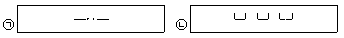
- ㉠ - 벽면한계선
- ㉡ - 건축한계선
- ㉠ - 벽면지정선
- ㉡ - 건축지정선
(정답률: 57%)
22. 다음 중 제2종지구단위계획에 대한 설명으로 옳지 않은 것은?
- 난개발 방지를 위하여 개별 개발수요를 집단화하고 기반시설을 충분히 설치함으로써 개발이 예상되는 지역을 체계적으로 개발·관리하기 위한 계획이다.
- 다른 도시관리계획에 의하여 지구단위계획이 변경되는 경우에는 가급적 두 계획 모두를 동시에 입안하도록 한다.
- 상위계획 및 관련계획의 내용과 취지를 반영하여야 한다.
- 제1종지구단위계획보다 계획의 실현성이 상대적으로 낮다.
(정답률: 43%)
23. 다음 중 주간선도로와 보조간선도로와의 배치간격 기준으로 옳은 것은?
- 400m 내외
- 500m내외
- 600m 내외
- 700m내외
(정답률: 63%)
24. 다음 중 토지이용계획을 수립함에 있어 정량적인 예측 변수에 해당하지 않는 것은?
- 가구규모
- 인구규모와 구성
- 생활양식의 변화
- 고용자수
(정답률: 54%)
25. 다음 중 대지면적 12000m^2, 건축면적이 1500m^2, 연면적이 9000m^2인 아파트를 건축한 경우 용적률이 얼마인가? (단, 용적률 : Floor Area Ratio)
- 600%
- 133%
- 75%
- 17%
(정답률: 48%)
26. 다음 중 획지계획에 대한 설명으로 옳지 않은 것은?
- 획지(lot)는 개발이 이루어지는 최소 단위다.
- 앞으로 진행될 단위 개발의 토지기반을 마련해주는 행위다.
- 획지의 형태와 규모는 개발의 용도와 밀도, 가로구성, 경관조성 등이 실제적을 실현되는데 영향을 준다.
- 획지계획은 토지이용의 효율성과 주거의 쾌적성 중 하나의 목적만을 선택하여 추구할 수 있도록 계획하여야 한다.
(정답률: 56%)
27. 다음 중 공동주택을 건설하는 주택단지에 공해방지 또는 조경을 위한 식재를 위하여 확보하여야 하는 녹지의 면적 기준은 얼마인가?(단, 공동주택의 1층에 주민의 공동시설로 사용하는 피로티를 설치하는 경우는 고려하지 않는다.)
- 단지면적의 100분의 20에 해당하는 면적
- 단지면적의 100분의 30에 해당하는 면적
- 단지면적의 100분의 40에 해당하는 면적
- 단지면적의 100분의 50에 해당하는 면적
(정답률: 53%)
28. 다음 중 Litton이 산림경관을 분석하는데 사용한 시각 회랑에 의한 방법에서, 경관의 변화요인(variablefactors)에 해당하지 않는 것은?
- 계절(season)
- 연속(Sequence)
- 거리(distance)
- 시간(time)
(정답률: 43%)
29. 다음 중 제1종 지구단위계획구역으로 반드시 지정하여야 하는 지역 기준으로 옳은 것은?
- 주거지역에서 상업지역으로 변경되는 지역으로 그 면적이 10만m2 이상인 지역
- 주거지역에서 상업지역으로 변경되는 지역으로 그 면적이 30만m2 이상인 지역
- 시가화조정구역 또는 공원에서 해제되는 지역으로 그 면적이 10만m2 이상인 지역
- 시가화조정구역 또는 공원에서 해제되는 지역으로 그 면적이 30만m2 이상인 지역
(정답률: 47%)
30. 다음 중 케빈 린치(Kevin Lynch)가 제안한 도시이미지(image)형성의 5가지 요인에 해당하지 않는 것은?
- 중심지(B.C.D)
- 지구(district)
- 랜드마크(landmark)
- 결절점(node)
(정답률: 71%)
31. 다음 중 생활권을 1차~3차생활권으로 구분하였을 때, 2차 생활권(중생활권)을 기준으로 설치되는 시설로 가장 적합한 것은?
- 구청
- 어린이놀이터
- 초등학교
- 대학교
(정답률: 48%)
32. 도시인구가 20만인이고 취업률 30%, 제조업인구구성 비가 25%, 제조업인구 1인당 점유토지면적이 300m2이다. 이 때 공업지의 총 소요면적은 얼마인가?(단, 공공용지율은 40%이다.)
- 600ha
- 750ha
- 900ha
- 1100ha
(정답률: 56%)
33. 다음 중 페리(C. A. Perry)가 주장한 근린주구의 개념과 거리가 먼 것은?
- 근린주구의 경계는 간선도로에 의해 구획되도록 한다.
- 학교, 공공건축용지는 단지의 중심 위치에 적절히 통합해야 한다.
- 초등학교 1개를 유지할 수 있는 인구규모를 가지고, 물리적 규모는 밀도와 상관없이 동일하여야 한다.
- 내부의 가로체계는 통과교통을 배제할 수 있도록 한다.
(정답률: 58%)
34. 축척이 1/50000인 지형도 위에 20m 간격으로 등고선이 그려져 있고, 5줄마다 계곡선이 있다. 어떤 사면의 경사를 알기 위해 측정한 계곡선 간의 수평거리가 1.2cm 이었을 때 이 사면의 경사도는?
- 약 9%
- 약 12%
- 약 17%
- 약 20%
(정답률: 34%)
35. 다음의 국지도로 유형 중 부정형한 지형에 적용이 용이한 편이며 통과교통이 차단되어 보해의 안전성과 주거환경의 쾌적성을 확보할 수 있으나, 개별 획지로의 접근성은 다소 불리한 것은?
- 격자형 도로
- T자형 도로
- 쿨데삭형 도로
- S자형 도로
(정답률: 50%)
36. 다음 중 도시설계의 과정에 대한 설명으로 옳지 않은 것은?
- 공공의 기능 확보에 대한 역할로 주민참여과정을 가능한한 수반한다.
- 현황 및 여건분석은 물리적 환경 뿐만 아니라 비물리적 요소까지 함께 분석한다.
- 도시설계안의 작성은 사업 특성에 맞는 부문별 계획을 포함하여 공간구조와 물리적 시설 계획까지 수립한다.
- 시행계획은 공공부문 시행계획과 민간부문 시행계획 중 단계별 민간부문 시행계획만 수립하면 된다.
(정답률: 73%)
37. 다음 중 지구단위계획에서의 환경관리계획에 대한 설명으로 옳지 않은 것은?
- 구릉지 등의 개발에서 절토를 최소화하고 절토면이 드러나지 않게 대지를 조성하여 전체적으로 양호한 경관을 유지시킨다.
- 구릉지에는 가급적 고층 위주로 계획하며 주변 지역과 유사한 스카이라인을 형성하도록 한다.
- 대기오염원이 되는 생산활동은 주거지 안에서 일어나지 않도록 한다.
- 쓰레기 수거는 가급적 건물 후면에서 이루어지도록 설계하며, 폐기물 처리시설을 설치하는 경우 바람의 영향을 감안하고 지붕을 설치하여야 한다.
(정답률: 62%)
38. 다음 중 복층형 주택(메조네트, maisonnette)형식에 대한 설명으로 옳지 않은 것은?
- 1개 주호가 2개층을 사용하는 경우 duplex라고 한다.
- 단면형태가 복잡해져 구조, 설비 등의 구성 및 설계에 세심한 고려가 필요하다.
- 일반적으로 작은 규모의 주거형식으로 적합하다.
- 공용복도가 없는 층에서는 직통 두 방향으로 개구부를 둘 수 있어서 통풍과 채광에 유리하다.
(정답률: 59%)
39. 다음 중 공동주택을 건설하는 지점의 소음도 기준으로 옳은 것은?
- 35dB미만
- 45dB미만
- 55dB미만
- 65dB미만
(정답률: 54%)
40. 다음 중 공동주택을 건설하는 주택단지에서 기간도로와 접하는 폭 또는 기간도로로부터 당해 단지에 이러는 진입도로의 폭 기준이 주택단지의 총세대수에 따라 옳게 연결된 것은?
- 300세대 미만 - 6m이상
- 300세대 이상 500세대 미만 - 10m 이상
- 500세대 이상 1천세대 미만 - 14m 이상
- 1천세대 이상 1천세대 미만 - 18m 이상
(정답률: 18%)
3과목: 도시개발론
41. 다음의 경우 상업용지의 면적을 추계한 값이 옳은 것은?
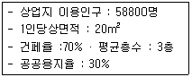
- 800000 m2
- 1000000 m2
- 1020400 m2
- 1120000 m2
(정답률: 39%)
42. 기업의 자금조달 구조를 크게 내부자금과 외부자금으로 분류할 때에 다음 중 내부작므의 형태에 해당하는 것은?
- 감가상각충당금
- 화사채 발행
- 상업차관
- 국제리스
(정답률: 50%)
43. 다음 중 토지의 취득방식에 따른 도시개발사업의 유형에 해당하지 않는 것은?
- 혼용방식
- 제3섹터개발방식
- 환지방식
- 수용 또는 사용방식
(정답률: 65%)
44. 다음 중 수요예측의 정성적 예측모형으로 조사하고자 하는 특정 사항에 대한 전문가 집단을 대상으로 반복 앙케이트를 시행하여 의견을 조절하는 방법은?
- 델파이법
- 판단결정모델
- 로짓모형
- 허프(Huff)모형
(정답률: 56%)
45. 다음 중 계획단위개발(PUD)에 대한 설명으로 옳지 않은 것은?
- 일단의 지구를 하나의 계획단위로 보고 개발자의 입장에서 요구되는 사업성과 공적 입장에서 요구되는 환경의 질을 동시에 추구하는 제도라 할 수 있다.
- 계획단위개발을 하는 경우, 그 구역 내에서 종래의 용도 지역제가 완전히 실효(失效)되는 것은 아니다.
- 계획단위개발지구전체의 총밀도가 종전 용도지역제에 의한 허용범위를 넘지 않는 한 지구내 각 획지는 밀도 기준에 구애받지 않을 수 있다.
- 1962년 샌프란시스코에서 주거지역과 상업지역에 대한 특례조치로 시작되었다.
(정답률: 27%)
46. 다음 중 대중교통중심개발(TOD)의주요 원칙에 해당하지 않는 것은?
- 생태적으로 민감한 지역이나 수변지, 야호한 공지의 보전을 추구한다.
- 대중교통 정류장으로부터 보행거리 내에 주요 시설을 혼합 배치하여 대중교통위주의 보행 가능한 개발을 추구한다.
- 다양한 주거 유형과 밀도, 가격을 제공한다.
- 대중교통노선을 이용한 저밀도 개발을 통하여 전원형 도시를 개발한다.
(정답률: 53%)
47. 다음 중 도시 및 주겨환경정비법에 따를 정비사업에 해당 하지 않는 것은?
- 주거환경개선사업
- 주택재건축사업
- 재정비촉진사업
- 도시환경정비사업
(정답률: 34%)
48. 다음 중 도시개발사업의 평가를 위한 지표인 수익성 지수(PI)를 산정하는 식으로 옳은 것은?
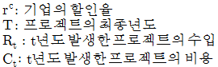
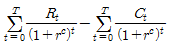
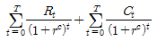
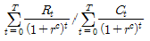
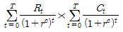
(정답률: 59%)
49. 다음 중 압축도시(Compack City)에 대한 설명으로 옳지 않은 것은?
- 토지이용은 달인이용(unit land use)을 추구해야 한다.
- 지속가능한 개발이 가능하도록 등장한 도시개발 패러다임 중 하나다.
- 압축도시의 개념은 직주근접과 관련이 있다.
- 환경부하를 최소화하고 정주지 개발의 효율성을 높이려는 목적을 갖는다.
(정답률: 50%)
50. 다음 중 부동산과 금융을 결합한 형태로서 부동산 투자의 약점으로 꼽히는 유동성 문제와 소액투자 곤란의 문제를 증권화라는 방식을 이용하여 해결하고 있는 것은?
- 리츠(REITs)
- 건설-운영-이전(BOT)
- 사모투자전문회사(PEF)
- 자산담보부증권(ABS)
(정답률: 57%)
51. 다음 중 버그(Berg)가 인구변화에 다라 구분한 도시화의 4단계에 해당하지 않는 것은?
- 도시화 단계(stage of urbanization)
- 교외화 단계(stage of suburbanization)
- 반도시화 단계(stage of deurbanization)
- 신도시화 단계(stage of new-urbanization)
(정답률: 64%)
52. 다음 부동산 투자의 유형 중 자본의 성격은 자본투자(equity financing)이면서 운용시장의 형태가 공개시장(public market)에 해당하는 것은?
- 사모부동산펀드
- 부동산투자회사
- 상업용저당채권
- 직접대출
(정답률: 56%)
53. 다음 중 도시개발 전략의 수립 시 고려할 사항으로 옳지 않은 것은?
- 다양한 재무적 투자형태를 고려하여 가장 바람직한 지분구조를 도출한다.
- 사회적 목표, 재무적 목표, 비즈니스 계획등을 포함하여 전반적인 기본 구상을 설정한다.
- 개발기본계획의 내용은 고려하지 않고, 시장과 경쟁시설에 대한 개략적인 분석만으로 재무적 타당성을 결정한다.
- 부지 및 주변지역의 기반시설, 지형, 지세, 각종 규제, 토지이용계획 등을 고려하여 개발대상지를 분석한다.
(정답률: 58%)
54. 다음 중 기업금융과 비교하여 프로젝트파이낸싱이 갖는 특징에 대한 설명으로 옳지 않은 것은?
- 담보 : 사업자산 및 현금흐름
- 채무수용능력 : 부외금융으로 채무수용능력 제고
- 사후관리 : 채무불이행시 상환청구권 행사
- 소구권행사 : 모기업에 대한 소구권 생사 배제 또는 제한
(정답률: 45%)
55. 다음 중 입체환지에 대한 설명으로 가장 거리가 먼 것은?
- 입체환지의 경우에는 건축계획을 환지계획의 내용에 포함하여야 한다.
- 입체환지는 집단체비지내에 단독주택 또는 연립주택을 건설하는 경우에 허용한다.
- 입체환지로 계획수립시 평가식, 면적식, 절충식의 환지 방식 규정을 적용받지 아니하고 비례율에 의해 환지할 수 있다.
- 해당 구역안에 토지와 그 토지에 건축된 주택을 동시에 소유한 자는 입체환지의 대상이 될 수 있다.
(정답률: 9%)
56. 다음 중 개발대상지의 상태에 따라 도시개발을 신개발과 재개발로 구분할 때, 재개발에 대한 설명으로 옳지 않은 것은?
- 재개발은 신개발에 ₩비해 그 절차가 간편하고 시간이 적게 걸린다.
- 재개발의 일반적인 목적은 주거 환경을 개선함으로써 주민의 주거안정을 도모하고 공동체적 삶의 질을 향상시키는 것이다.
- 재개발은 기존 시가지의 일부를 개수 혹은 재건축하고 시설을 확충하는 개발행위라고 할 수 있다.
- 재개발의 유형은 재개발 대상의 공간적 범위와 토지이용, 재개발방식 등에 의하여 여러 가지로 나눌 수 있다.
(정답률: 54%)
57. 다음 거리와 지대 및 밀도의 관계 그래프에서 도시용 토지와 농업 등의 생산용도로 이용하고자 하는 토지로 나누어지는 지점은? (단, Ra: 농업지대곡선, Rr: 주거지대곡선, Rc: 상업·업무 지대곡선이다)
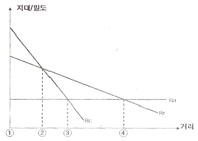
- 1
- 2
- 3
- 4
(정답률: 34%)
58. 다음 중 시장(market) 및 시장분석(market analysis)의 개념과 필요성에 대한 설명으로 옳지 않은 것은?
- 통상적으로 시장이란 상품의 수요와 공급이 만나 양과 가격이 결정되어 거래가 일어나는 곳을 말한다.
- 도시개발사업 측면에서의 시장분석이란 시장의 수요와 공급에 영향을 미치는 요인들은 분석하는 것을 말한다.
- 시장에는 현재 거래가 일어나는 실질시장(actualmarket)과 거래가 일어날 가능성이 있는 잠재시장(potential market)이 있는데 실질시장의 파악이 특히 중요하다.
- 도시개발사업은 공공성이 강한 정책적 사업으로 상당수가 정부의 개입과 통제를 축으로 시장의 수급이 이루어진다는 점에 유의하여 시장분석이 이루어져야 한다.
(정답률: 67%)
59. 다음 중 민간사업자가 건설한 사회기반시설의 소유권을 일단 정부에 이전하고 다시 정부로부터 관리운영권을 임대 받는 방식을 무엇이라 하는가?
- ABS
- PF
- BTL
- CM
(정답률: 56%)
60. 다음 중 파라미터 값의 변화가 정책 분석의 최종결과에 미치는 정도를 분석하여, 정책의 경제성에 가장 큰 영향을 미치는 요소를 도출하고 그 대안을 제시할 수 있게 하는 방법은?
- 민감도분석
- 재무분석
- 경제성분석
- 파급효과분석
(정답률: 30%)
4과목: 국토 및 지역계획
61. 다음 중 개발도상국에서의 지역 간 인구 이동 요인으로 가장 설득력이 적은 것은?
- 취업기회의 확대
- 문화적 욕구의 충족
- 교육 수준과 기회의 차이
- 소득과 임금의 지역 간 격차
(정답률: 63%)
62. 다음 중 제4차 국토종합계획 수정계획(2011-2020)에 반영된 핵심 정책방향으로 옳지 않은 것은?
- 기후변화·기상이변에 대한 선제적 방재능력 강화
- 대륙과 해양을 연결하는 글로벌 거점기능 강화
- 저탄소·에너지 절감형 녹색국토 실현
- 지역기능 강화를 위한 교통·통신 자본의 확충
(정답률: 48%)
63. 다음과 같은 인구 조건에서 종주화지수(primaryindex)는 얼마인가?(단, 전국의 인구는 2000만명이다.)
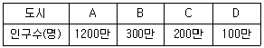
- 0.60
- 0.75
- 2.0
- 3.3
(정답률: 54%)
64. 다음 중 소자(E. Soja, 1971)가 계획단위로서의 공간 특성을 거리(distance)로 분류한 내용에 해당하지 않는 것은?
- 물리적 거리(physical distance)
- 마찰거리(frictional distance)
- 인식거리(perceived distance)
- 시간거리(time distance)
(정답률: 53%)
65. 다음 중 지역계획에 대한 설명으로 옳지 않은 것은?
- 현안 지역 문제를 해결하는 협의적 수준의 계획이다.
- 지역의 자연적, 경제적, 사회적 제 조건과 문제들을 개선하고자 한다.
- 지역을 발전시키고 지역 주민의 복지를 증대시키고자 하는 종합적인 과정이다.
- 지역계획의 의미는 시대와 사회 발전 과정에 따라 여러 가지로 변하하고 있다.
(정답률: 58%)
66. 다음 중 대도시의 성장 억제를 위한 정책과 거리가 먼것은?
- 과밀부담금제도
- 수도권정비계획
- 광역도시계획
- 개발제한구역 지정
(정답률: 50%)
67. 다음 중 국가경제의 발전단계를 공업화 이전단계, 초기공업화 단계, 과도단계, 경제발전의 4단계로 구분하여 이에 따른 공간조직이 어떻게 전개되는지를 설명하고, 분극적 개발의 일반이론을 주장한 학자는?
- 페로우(F. Perroux)
- 프리드만(J. Friedmann)
- 베리(B. Berry)
- 허쉬만(A. Hirschman)
(정답률: 31%)
68. 다음 중 대도시 라우리모형(Lowry's model ofmetropolis)에서 도시 활동 부문에 해당하지 않는 것은?
- 재정부문(finance sector)
- 서비스부문(service sector)
- 주거부문(household sctor)
- 기반부문(basic sector)
(정답률: 25%)
69. 다음 중 클라센(L. Klaassen)의 성장률과 소득수준에 대한 지역 분류에 해당하지 않는 것은?
- 번성지역
- 잠재적저개발지역
- 저개발지역
- 과밀지역
(정답률: 43%)
70. 다음 중 테네시계곡 개발계획(TVA계획)은 어느 나라의 지역 계획인가?
- 프랑스
- 영국
- 미국
- 독일
(정답률: 57%)
71. 다음 중 입지계수법(Location Quotient Method)에 대한 설명으로 옳지 않은 것은?
- A지역 특정상업의 입지계수(LQ값)가 1보다 크면 A지역은 해당 상업이 비교적 특화되어 있다는 의미다.
- 중간재의 특성을 고려한 장점이 있다.
- 수출기반모형 중 하나인 입지계수법은 수요모형에 해당한다.
- 어떤 산업의 생산품에 대한 소요수준이 전국적으로 동일하다고 가정하는 모순이 있다.
(정답률: 43%)
72. 다음 중 A시의 총 고용인구가 100만명이고 이 지역기반 산업의 고용인구가 70만명일 때 기반사업에 대한 총고용의 승수효과는 얼마인가?(오류 신고가 접수된 문제입니다. 반드시 정답과 해설을 확인하시기 바랍니다.)
- 4.53
- 3.33
- 2.33
- 1.43
(정답률: 15%)
73. 다음 중 국토 및 지역개발의 관점에서 중앙 정부 주도의 하향식 개발을 지향하는 것은?
- 성장거점개발
- 지역생활권개발
- 도농통합개발
- 농어촌정주권개발
(정답률: 65%)
74. 다음 중 지방의 발전잠재력을 개발하고 민간부문의 자율적인 참여를 유도하여 지역개발사업이 효율적으로 시행될 수 있도록 함과 아울러 지방중소기업을 적극적으로 육성함으로써 인구의 지방정착을 유도하고 지역 경제를 활성화시켜 국토의 균형있는 발전에 기여함을 목적으로 하는 것은?
- 수도권정비법
- 민자유치촉진법
- 산업입지 및 개발에 관한 법률
- 지역균형개발 및 지방중소기업 육성에 관한 법률
(정답률: 72%)
75. 다음 중 주택을 대량 공급하면 가구의 연쇚거인 상향 이동을 통하여 전체 주거수준이 높아진다는 주장을 핵심내용으로 하는 것은?
- 생애주기이론(Life-cycle Theory)
- 상쇄이론(Trade-off Theory)
- 주택여과이런(Filtering Theory)
- 주거입지이론
(정답률: 28%)
76. 다음 중 크리스탈러의 중심지이론에 대한 설명으로 옳지 않은 것은?
- 중심재화나 서비스의 최대 도달 가능 거리를 시장범위의 외곽한계(outer limit)라 부른다.
- 중심지이론은 3차 산업이 공간상에서 어떻게 입지하고 어떤 원리에 의하여 분포 패턴이 결정되는지를 설명한다.
- 중심지 간 관계성을 나타내는 K값은 시장의 원리, 교통의 원리, 행정의 원리 중 시장의 원리에서 가장 크다.
- 중심지이론에서 지리적 공간은 자원과 인구가 균등하게 분포되어 있는 평면공간으로 가정한다.
(정답률: 50%)
77. 다음 중 안스타인(S. Arnstein)이 주장한 주민참여 8단계에서 주민권력단계(degrees of citizen power)에 해당하지 않는 것은?
- 주민통제(citizen control)
- 권한위임(delegated power)
- 협동관계(partnership)
- 상담(consultation)
(정답률: 50%)
78. 다음 중 국토기본법에 따fms 국토계획에 대한 설명으로 옳지 않은 것은?
- 국토종합계획은 국토전역을 대상으로 국토의 장기적인 발전방향을 제시하는 종합계획이다.
- 부문별계획은 국토전역을 대상으로 특정부문에 대한 장기적인 발전방향을 제시하는 계획이다.
- 지역계획은 특정한 지역을 대상으로 특별한 정책목적을 달성하기 위하여 수립하는 계획이다.
- 시·군종합계획은 특정한 지역을 대상으로 특별한 정책목적을 달성하기 위하여 수립하는 계획이다.
(정답률: 60%)
79. 다음 중 콥-더글라스(Cobb-Douglas)의 생산함수에 관한 아래 설명에서 ( )에 들어갈 말이 모두 옳은 것은?
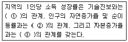
- ① 정(正) ② 정(正) ③ 정(正)
- ① 정(正) ② 정(正) ③ 부(負)
- ① 정(正) ② 부(負) ③ 정(正)
- ① 정(正) ② 부(負) ③ 부(負)
(정답률: 50%)
80. 다음 중 농업용 토지에 대하여 토지의 비옥도와 지애듸 관계를 가지고 지대이론을 처음으로 발전시킨 학자는?
- 리카도(D. Ricardo)
- 스미스(A. Smith)
- 튀넨(von Thunen)
- 뢰쉬(A. Losch)
(정답률: 34%)
5과목: 도시계획관계법규
81. 다음 중 수도권정비계획법령에 따른 인구집중유발시설의 기준이 옳지 않은 것은?
- 「고등교육법」에 따른 학교로서 대학, 산업대학, 교육대학 또는 전문대학
- 「공업배치 및 공장설립에 관한 법률」에 따른 공장으로서 건축물의 연면적이 200m2 이상인 것
- 중앙행정기관 및 그 소속 기관의 청사 중 건축물의 연면적이 1000m2 이상인 것
- 복합시설이 주용도인 건축물로서 그 연면적이 25000m2 이상인 건축물
(정답률: 34%)
82. 다음 중 광역도시계획의 승인에 관한 설명으로 옳은 것은?
- 시·도지사는 광역도시계혹과 관련한 내용을 일반이 열람하게 하거나 공고할 필요는 없다.
- 광역도시계획에 대한 협의 요청을 받은 관계 중앙행정기관의 장은 특별한 사유가 없는 한 그 요청을 받은 날부터 14일 이내에 국토해양부장관에게 의견을 제시 하여야 한다.
- 시장 또는 군수가 광역도시계획을 수립하거나 변경하는 경우 도지사의 승인을 받을 필요가 없다.
- 국토해양부장관이 직접 광역도시계획을 수립하려면 관계 중앙행정기관과 협의한 후 중앙도시계획위원회의 심의를 거쳐야 한다.
(정답률: 38%)
83. 다음 중 수도권정비계획법상 성장관리권역에서 시설의 신설·증설에 대한 허가가 가능하지 않은 경우는?
- 수도권에서의 학교 이전
- 수도권정비위원회의 심의를 거친 입학정원 50인 이내의 대학 신설
- 수도권에서 이전하는 연수 시설의 종전 규모의 2배 신축
- 기존 연수 시설의 건축물 연면적이 100분의 20 범위에서의 증축
(정답률: 7%)
84. 다음 중 도시계획시설로서 광장의 종류에 해당하지 않는 것은?
- 교통광장
- 경관광장
- 지하광장
- 집회광장
(정답률: 57%)
85. 다음 중 국토해양부장관이 개발제한구역이 해제된 지역에 대하여 해제 후 최초로 결정되는 도시관리계획의 내용이 해제의 목적이나 용도에 부합하지 아니하는 경우, 해제지역을 관할하는 자에게 도시관리계획을 조정 하도록 요구할 수 있는 기간 기준은?
- 도시관리계획이 결정·고시된 날부터 6개월 이내
- 도시관리계획이 결정·고시된 날부터 3개월 이내
- 도시관리계획이 결정·고시된 날부터 1개월 이내
- 도시관리계획이 결정·고시된 날부터 14일 이내
(정답률: 42%)
86. 다음 중 국민주택기금에 관한 내용이 옳지 않은 것은?
- 국민주택기금은 국토해양부장관이 운용·관리 한다.
- 국민주택기금의 운용·관리에 관한 사무를 위탁받은 기금수탁자는 대통령령으로 정하는 바에 따라 국민주택 기금의 조성 및 운용 상황을 국토해양부장관에게 보고하여야 한다.
- 국토해양부장관은 국민주택기금의 운용에 관한 계획을 수립하려는 경우에는 미리 기획재정부장관과 협의하여야 한다.
- 국민주택기금의 화계연도·운용계획 및 결산 등에 관하여는 원칙적으로 「국민연금법」을 적용한다.
(정답률: 34%)
87. 다음 중 시장·군수·구청장이 시·도지사의 승인을 받지 않아도 되는 조성계획의 변경 기준으로 옳지 않은 것은?
- 관광시설계획면적의 100분의 20 이내의 변경
- 관광시설계획 중 시설지구별 토지이용계획면적의 100분의 20이내의 변경
- 관광시설계획 중 시설지구별 건축 연면적의 100분의 30이내의 변경
- 관광시설계획 중 시설지구별 토지이용계획면적이 2200제곱미터 미만인 경우에는 660 제곱미터 이내의 변경
(정답률: 31%)
88. 다음 중 도시개발사업의 위탁에 대한 설명으로 옳은 것은?
- 시행자는 공유수면의 매립에 관한 업무를 대통령령으로 정하는 바에 따라 지방자치단체에 위탁하여 시행할 수 있다.
- 시행자가 관할 지방자치단체에 주민 이주대책 사업을 위탁하는 경우에는 이주대책의 수립·실시 또는 이주정착금의 지급과 관련된 부대업무만을 위탁할 수 있다.
- 시행자가 업무를 위탁하여 시행하는 경우에는 대통령령으로 정하는 요율의 위탁수수료를 그 업무를 위탁받아 시행하는 자에게 지급하여야 한다.
- 모든 시행자는 지정권자의 승인을 받지 않고 신탁업자와 신탁계약을 체결하여 도시개발사업을 시행할 수 있다.
(정답률: 19%)
89. 다음 중 수도권정비실무위원회의 위원장은?
- 국무총리
- 국토해양부장관
- 국토해양부 제1차관
- 서울특별시 2급 공무원
(정답률: 22%)
90. 다음 중 도시관리계획에 관한 지형도면의 작성방법에 대한 설명으로 옳지 않은 것은?
- 녹지지역 안의 토지에 대해서는 축척 500분의 1 내지 1천500분의 1의 지적도에 지형도면을 작성하여야 한다.
- 지형도가 간행되어 있지 아니한 경우에는 해도·해저 지형도 등의 도면으로 지형도에 갈음할 수 있다.
- 지형도면이 2매 이상인 경우에는 5천분의 1 내지 5만분의 1의 총괄도를 따로 첨부할 수 있다.
- 산업단지조성사업이 완료된 구역인 경우 지적도 사본에 도시관리계획사항을 명시한 도면으로 지형도면에 갈음할 수 있다.
(정답률: 27%)
91. 다음 중 주차장법에 따라 일정 규모 이상의 노외주차장을 설치하여야 하는 단지조성사업에 해당하지 않는 것은?
- 택지개발사업
- 도시재개발사업
- 역세권개발사업
- 산업단지개발사업
(정답률: 7%)
92. 다음 중 국토해양부장관이 토재거래계약에 관한 허가 구역으로 지정할 수 있는 기간 기준은?
- 10년 이내
- 5년 이내
- 3년 이내
- 1년 이내
(정답률: 39%)
93. 다음 중 택지개발사업 시행자가 택지를 수의계약으로 공급할 때에 1세대당 1필지를 기준으로 하여 1필지당 얼마의 규모로 공급하는 것을 기준으로 하는가?
- 85m2 이상 100 m2 이하
- 100m2 이상 165 m2 이하
- 165m2 이상 200 m2 이하
- 165m2 이상 265 m2 이하
(정답률: 25%)
94. 다음 중 해당 용도지역별 용적률의 최대한도가 가장 낮은것부터 순서대로 옳게 나열한 것은?
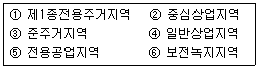
- ⑥-①-③-⑤-④-②
- ⑥-①-③-④-⑤-②
- ⑥-①-⑤-③-②-④
- ⑥-①-⑤-③-④-②
(정답률: 45%)
95. 다음 중 ①과 ②에 들어갈 말이 모두 옳은 것은?
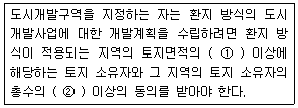
- ① 1/3 ② 1/2
- ① 1/2 ② 1/3
- ① 2/3 ② 1/2
- ① 1/2 ② 2/3
(정답률: 40%)
96. 다음 중 택지개발사업의 시행자에 해당하지 않는 것은?
- 국가·지방자치단체
- 국토해양부장관이 지정하는 정부투자기관
- 지방공기업법에 의한 지방공사
- 주택건설 등 사업자가 예정지구 안의 토지면적 중 대통령령이 정하는 비율 이상의 토지를 소유하고 대통령령이 정하는 요건과 절차에 따라 공공시행자와 공동으로 개발 사업을 시행하는 자
(정답률: 19%)
97. 다음 중 도시 및 주거환경정비법에 따른 “노후·불량 건축물”로 보기 어려운 것은?
- 건축물이 훼손되거나 일부가 멸시되어 붕괴 그 밖의 안전사고의 우려가 있는 건축물
- 당해 건축물을 준공일 기준으로 40년까지 사용하기 위하여 보수·보강하는데 드는 비용이 철거 후 새로운 건축물을 건설하는데 드는 비용보다 클 것으로 예상되는 건축물
- 건축물의 기능적 결함으로 철거가 불가피한 건축물로서 준공된 후 20년이 지난 건축물
- 도시미관의 저해, 구조적 결함으로 인하여 재건축이 불가피하다고 주민조합에서 결정한 건축물
(정답률: 24%)
98. 다음 중 산업입지 및 개발에 관한 법률에 따른 사업단지에 해당하는 것으로만 나열된 것은?
- 국가산업단지, 일반산업단지, 농공단지
- 국가산업단지, 도시산업단지, 농공산업단지
- 국가산업단지, 일반산업단지, 특수산업단지
- 국가산업단지, 지역산업단지, 농공단지
(정답률: 34%)
99. 다음 중 도시공원 및 녹지 등에 관한 법률에 따른 도시 공원의 세분에 해당하지 않는 것은?
- 묘지공원
- 중앙공원
- 근린공원
- 어린이공원
(정답률: 34%)
100. 다음 중 택지개발 예정지구의 지정에 대한 설명으로 옳지 않은 것은?
- 국토해양부장관이 택지개발 예정지구를 지정하고자 하는 경우 미리 관계 중앙행정기관의 장과 협의하고 해당 지방자치단체의 장의 의견을 들은 후 중앙도시계획위원회의 심의를 거쳐야 한다.
- 시·도지사(특별자치도지사 제외)는 지정하려는 예정지구의 면적이 330만m2 이상인 경우에는 국토해양부장관의 승인을 받아야 한다.
- 지정권자는 택지개발 예정지구가 고시된 날부터 3년 이내에 시행자가 택지개발사업실시계획의 작성 또는 승인신청을 하지 아니한 때에는 그 지정을 해제하여야 한다.
- 택지개발 예정지구의 지정 또는 해제가 잇은 때에는 국토의 계획 및 이용에 관한 법률에 따른 제1종지구단위계획구역의 지정 또는 해제가 있은 것으로 본다.
(정답률: 7%)